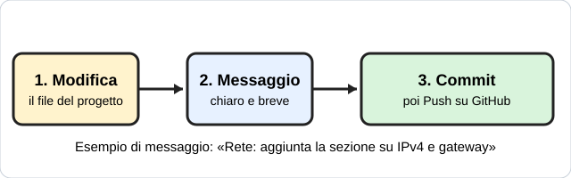

Il commit del progetto: che cosa c'entra la rete?

1Apri il tuo progetto su GitHub
Apri il repository del tuo progetto individuale (lo stesso delle altre volte).
2Aggiungi una sezione sulla rete
Apri il file di descrizione del progetto (README) con la matita. Scrivi 4-5 righe: dove il tuo progetto usa la rete, che indirizzo IP e quale maschera servono, e a che cosa servono gateway e DNS.
3Fai il commit con un messaggio chiaro
In basso scrivi il messaggio (una frase che dice cosa hai cambiato) e premi il bottone verde del commit. Esempio: «Rete: aggiunta la sezione su IPv4 e gateway».
Consegna
Chi sei?
L'indirizzo del tuo commit (dalla barra del browser)
Il messaggio che hai scritto
La pagina viene aggiornata spesso durante la lezione: premi F5 per vedere la versione nuova.